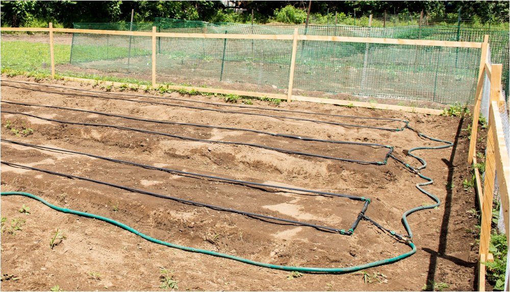

|
Hello dahlia friends!
Happy 2024!! The signs of spring are already in
the air and we’re looking forward to the date
less than a month away. In January we had our
annual New Year Celebration with YDS member
Caitlin Horgan of Flora Farm as our presenter,
sharing her flower farm journey with us. It was
wonderful to see longtime and so many new dahlia
friends there. We’re glad so many of you came to
celebrate the new dahlia season with YDS.
For our February Zoom meeting we enjoyed a
presentation by YDS member Susan Keyes who
gardens in Maine and Massachusetts. Susan gave
us all so many ideas on how to plan out our
dahlia garden to create beautiful combinations
of plantings, forms, and colors. Her spreadsheet
of cultivars and notes about them was an
inspiration.
Planning for the upcoming YDS growing season is
already in the works as we turn our attention to
our club Growing Partners and preparations for
planting at each location. We will have five
Growing Partners this year and will share an
overview of our Growing Partners with you as
part of our next meeting. Our members who
volunteer at each location are the reason for
the success of our Growing Partner gardens and
the tubers they provide for our fundraising
sales.
We thank our amazing volunteers who helped out
last year and look forward to introducing many
of you who are new to volunteering as well. It’s
fun to get together and you will learn a lot
about growing dahlias. Come and see what our
Growing Partner gardens are about and how you
can sign up and participate in helping make them
spectacular.
– Misty & Carol
|
|
March 3rd Meeting
Setting Up A Watering System For Your Garden
with John Livornese

Photo by Misty Florez
Gardeners know that every new growing season
brings a unique experience with a different set
of challenges and rewards to respond to. How can
we take best advantage of the learning
opportunities each new gardening year presents?
Documenting your garden season yearly is the
most effective way to increase your knowledge.
With a permanent record, the valuable
information is always at your fingertips to
reference.
YDS member Stefanie Schori has taken her tech
skill and applied it to creating a useful and
beautiful Garden Journal that she uses to
document her garden year, from preseason
planning all the way through to harvest.
Stefanie has a wonderful presence on Instagram
that is all about gardening, from vegetables to
flowers. Given Stefanie’s passion for sharing
her garden tips, creating a Garden Journal for
the home gardener to organize their information
in one place was a step that just naturally made
sense. Stefanie will present to us the many
benefits of documenting our garden year and
introduce us to her Garden Journal; highlighting
the sections and explaining why and how to use
it, and what kinds of information she found most
helpful to track year after year. Whether you
start from seeds or transplants, her Garden
Journal can help you get the most out of your
growing season. Let Stefanie inspire you to
document your garden season!
Stefanie is a Yankee Dahlia Society Member
located in Attleboro, MA in Zone 6b. Covid
turned her into a gardener and she never
looked back. Initially, Stefanie started with
vegetable gardening until she grew her first
Cafe au lait dahlia and was hooked on cut
flowers ever since. She loves to research
everything and loves even more to share her
knowledge with the gardening community.
Location:
Spence Farm @ Hurld Wyman Elementary School, 41
Wyman Street, Woburn, MA 01801
Date & Time:
Sunday, March 3rd, 2024 from 11:00am to 2:00pm
RSVP through SignUp Genius:
An RSVP isn’t required but extremely helpful for
us as we make plans. Please let us know you’re
coming
Tuber Order PickUp:
Members who have placed a tuber order, we are
happy to have your tuber order ready for pick up
at the March meeting. Please sign up on our
SignUp Genius Tuber Order Pickup page to let us
know when you’ll be picking up your tubers:
https://www.signupgenius.com/go/10C0C44AFA82DA5FAC16-47097835-2024#/
March 3rd Meeting Agenda:
-
11:00 - 11:15
- Mingle & Coffee
-
11:15 - 11:30
- Welcome; Monthly overview
-
11:30 - 12:00
-Tricks and Tools of the Trade for Dahlia
Growers Big and Small: Presentation by Jess
Wilke of
Flowers at 60 Worcester
-
12:00 - 12:30
- Hands On Tool Maintenance & Sharpening
Workshop with John Livornese
-
12:45 - 1:00
- Workshop - Maintenance & Sharpening Garden
Tools
-
1:00 - 1:45
- Live Auction and Raffle
-
1:45 - 2:00
- Mingle with Members and Bring your Dahlia
Growing Q&A's
|
|
Member Spotlight
Monica Baum
Photos by Monica Baum
My gardening journey started with peonies.
Though they are beautiful and have a heavenly
scent they don’t last long so I transitioned to
dahlias which have a much longer blooming cycle.
I still have at least 60 peony plants and
probably 30+ varieties.
My mother helped me dig my first garden 25 years
ago right before my daughter was born. As my
children grew older my gardening hobby/plant
addiction grew. Having more time encouraged me
to annex larger patches of the yard. I have
gardens on the 3 sunny sides of the house. I’m
guessing that our gardens make up 1/3 of our 3/4
acre lot. Unlike traditional homes I have a
small backyard but a large side yard. The 2 beds
in the front yard are where I plant my new
dahlia purchases for that season.
I purchased my first dahlia from Snug Harbor
Farm located in Kennebunk, ME in 2018. By 2019 I
had 20 varieties. Last year I had 100 plants
from 70 varieties. This year I will likely plant
200 dahlias from 160 varieties. Since 2019 I’ve
also started purchasing rose bushes. My big find
in late 2022-2023 is amaryllis. They are a
wonderful bridge between late fall to early
spring. I am going to test planting outside to
regrow next winter.
I grow lots of things from seed: veggies,
zinnias, cosmos, cleome, calendula, etc. I love
spending time with my hands in the dirt and
either planting or weeding. I especially love
bringing fresh flowers to family members to
share my bounty. I don’t love having to protect
the dahlias from bugs and rodents. 2023 was a
particularly rough year with a visiting hungry
woodchuck who feasted on my perennials, sneaky
chipmunks who stole the tomatoes and the endless
cycle of wireworms and earwigs who dined on the
dahlia tubers and petals. I’ve heard if you
plant a potato near the dahlia the wireworms
will go for that instead of the dahlias.
I am partial to all dahlias. Based on my photos
I think I’m definitely partial to peaches and
coral. I love the longevity of the blooming
cycle. When the annuals start looking tired the
dahlias start showcasing their beauty.
The digging, cleaning, dividing and storage is
certainly a huge amount of work. I think finding
a medium that works for the gardener and a
storage spot is challenging. I store mine in
Saran Wrap partially for space but mostly
because I’ve had great success.
My biggest tip is to have patience. The dahlias
are worth the wait. Patience at the beginning of
the season while waiting for the dahlias to
bloom and patience at the end of the season
while itching to dig them up. Thank you for
reading about me and my flowers.
|
|
Dahlia Tip
Did you know the American Dahlia Society brings
out a video of all the new introductions for
each year?
By Carol Palmer
American Dahlia Society has a network of eight
Trial Gardens located throughout the United
States. These Trial Gardens provide a place for
those hybridizers who are interested to have
their promising new and as yet undisseminated
seedlings evaluated and scored. Entering
seedlings into the ADS Trial Garden network is
entirely optional, but is a valuable process for
hybridizers who are interested in introducing
what they believe are show-worthy cultivars.
Candidate seedlings must have been grown for at
least three years prior to being entered into
the Trial Garden network and have won blue
ribbons as seedlings in ADS sanctioned shows.
Seedlings are judged at least three times during
the season and scored according to a
standardized point procedure set by ADS.
Seedlings that receive a score of 85 points or
higher will be recognized and reported in the
ADS Bulletin and entered in the classification
book and recognized by ADS. Medals are awarded
to the cultivars that achieve the highest
average scores in at least three Trial Gardens.
Take a look at the 2024 new introductions that
have scored well in the Trial Gardens and are
being introduced commercially for all dahlia
growers to add to their gardens.
Link to the ADS 2024 New Introductions video
and PDF
For those interested in more information about
the ADS Trial Gardens:
Link to the ADS Trial Gardens Overview page
|
|
American Dahlia Society Membership
Consider joining the national club through
Y.D.S.!
We hope those of you who are ADS members have
been enjoying the new full color Bulletins
packed with great articles and photos, and
reading our YDS society reports in every issue.
Want to keep the benefits of ADS membership
coming? Renewals are due before April 1 to keep
your Bulletin mailings uninterrupted. Renew your
membership in ADS today.
Whether you are interested in growing seedlings
or hybridizing, showing dahlias, growing dahlias
as cut flowers, or just want to know more about
them, you should definitely consider joining
ADS. ADS publishes a very informative and very
attractive full color Bulletin three times a
year along with an annual Classification and
Handbook of Dahlias that is an invaluable
reference. We are taking new and renewal ADS
memberships now. and all ADS memberships will be
valid through April 30, 2025.
ADS is the national organization. Benefits
include:
-
Access to the members-only section of the ADS
website, with in-depth information about
everything to do with dahlias
-
Three beautiful full color issues of the
Bulletin yearly packed with information,
photos and updates from local chapters
including Y.D.S.
-
A copy of the Classification & Handbook of
Dahlias
-
Supporting the network of Dahlia Shows,
Judging Roster & Show Reports
-
Support the mission of dahlia research, trial
gardens, classification system and seedling
evaluations
-
USA Individual Membership (1-person,
1-Classification book)
$30
-
USA Household Membership (2-people,
2-Classification books)
$35
To register through YDS, email
info@yankeedahliasociety.com
with the subject line “ADS Registration”
Renewals can be made through:
-
Venmo:
Our business Venmo is
@yankeedahliasociety
-
PayPal:
email us and we will create a PayPal invoice
for you
-
Check:
Please make your check payable to Yankee
Dahlia Society and mail to:
Yankee Dahlia Society
PO Box 56
Sterling MA 01564
Follow ADS on
Facebook
and
Instagram
|
|
YDS Online Store
|
|
Dahlias of Today 2024
The latest issue of Dahlias of Today
2024 is available now, and look who’s in
it!! YDS members Susan Keyes and Robin
Smith attended the 2023 National Show in
Portland and visited the Canby Trial
Garden at Swan Island, and Ted &
Margaret Kennedy’s Hollyhill Garden.
Both were caught on camera admiring the
dahlias and made it into Dahlias of
Today 2024.
The issue has many great articles and is
always an excellent read to keep up with
happenings in the dahlia world. Order
your copy today in our online store and
pick it up at the meeting Sunday!
|
|
|
ProMix BX with Mycorrhizae and
Biofungicide (60lb compressed bale)
$57.00/bale
ProMix BX with Mycorrhizae and
Biofungicide (25lb bag)
$35.00/bag
Our YDS online store has ProMix potting
soil in two sizes. Great for starting
your dahlia tubers and for general
garden use. We also have 4.5” deep
potting kits plus extra pots and trays
that fit most tubers. Check out our
online store
Supplies
section. Place your order now and we’ll
have it ready for you to pick up at the
March 3rd meeting or at your convenience
by coordinating with Misty or Carol.
Email us:
info@yankeedahliasociety.com
|
|
|
Wood Stakes 5 feet by 1 inch (bundle of
12)
$36.00
Wood Stakes 5 feet by 1 inch (bundle of
25)
$69.00
We have sturdy wood stakes to support
your dahlias. The stakes are 5 feet long
and a generous 1’ or more thickness,
pointed at one end. We find they are
durable and long lasting, plus they are
thick and stay in place well. Place your
order online now for delivery at our May
meeting or coordinate pick up with Carol
or Misty.
|
|
|

Did you miss the November Zoom Meeting? We are
grateful to Collin Thompson from Johnny’s
Selected Seeds for sharing his knowledge about
Cover Crops with us. Be sure to watch the
recording. Need help accessing the shared Google
Drive? Reach out and we’ll be happy to help.
Email:
info@yankeedahliasociety.com
|
|
|
Upcoming Meetings & Events
See All Meetings
Sunday, January 21th:
January New Year Celebration Party @
Knights of Columbus
112 Middlesex Ave
Wilmington, MA 01887
11:00 am – 3:30 pm
|
|
|
|
|